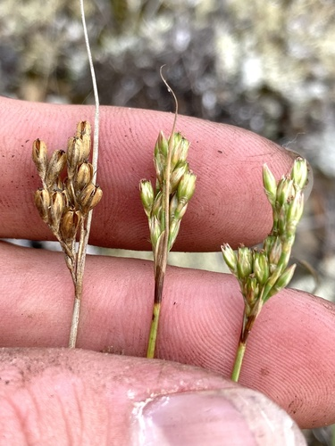
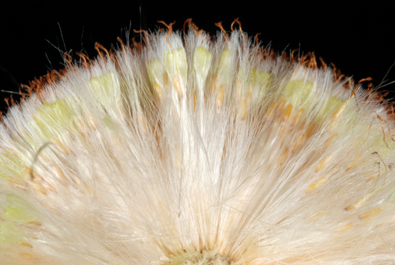
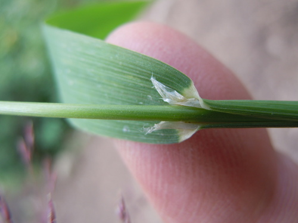
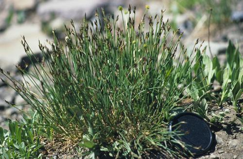
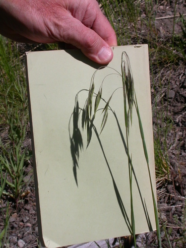
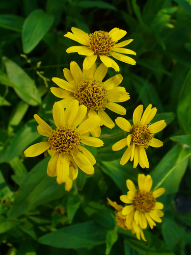
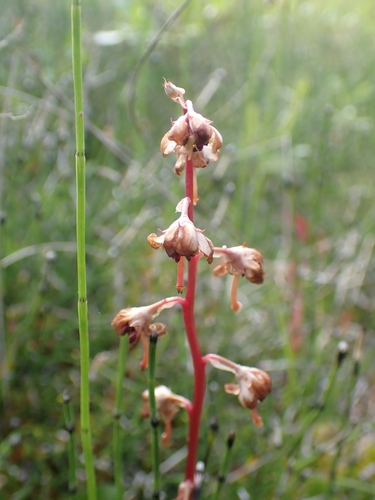
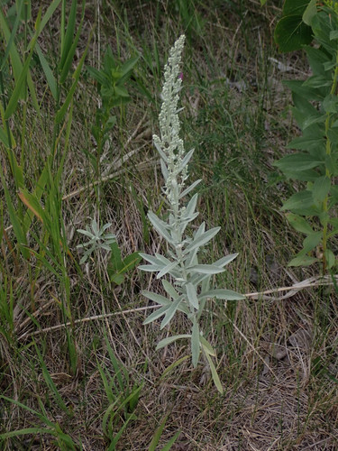
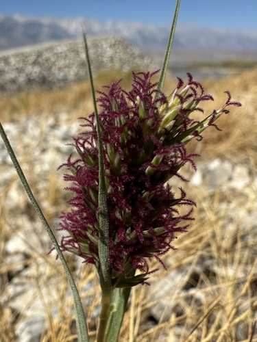
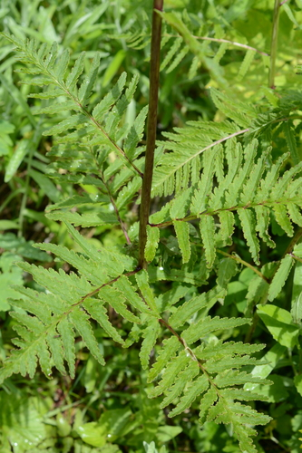

Plants blooming in August
A species with no recorded window is listed under no month.
179 plants
 Denali National Park and Preserve, some rights reserved (CC BY)") Alaska HarebellCampanula lasiocarpa
Alaska HarebellCampanula lasiocarpa W. Terry Hunefeld, some rights reserved (CC BY), uploaded by W. Terry Hunefeld") Alkali BulrushBolboschoenus maritimusAlkali Cord GrassSpartina gracilis
Alkali BulrushBolboschoenus maritimusAlkali Cord GrassSpartina gracilis Alastair Rae, some rights reserved (CC BY-SA)") Alpine BistortBistorta vivipara
Alpine BistortBistorta vivipara Matt Lavin, some rights reserved (CC BY-SA)") Alpine BluegrassPoa alpina
Alpine BluegrassPoa alpina Caleb Catto, some rights reserved (CC BY), uploaded by Caleb Catto") Alpine Forget-me-notMyosotis asiaticaAlpine Hedysarum (Bear Root)Hedysarum americanum
Alpine Forget-me-notMyosotis asiaticaAlpine Hedysarum (Bear Root)Hedysarum americanum Alex Abair, some rights reserved (CC BY), uploaded by Alex Abair") American BrooklimeVeronica americanaArctic AsterEurybia sibirica
American BrooklimeVeronica americanaArctic AsterEurybia sibirica Rob Foster, some rights reserved (CC BY), uploaded by Rob Foster") Arum-leaved ArrowheadSagittaria cuneataBig BluestemAndropogon gerardi
Arum-leaved ArrowheadSagittaria cuneataBig BluestemAndropogon gerardi Matt Lavin, some rights reserved (CC BY)") Big SagebrushArtemisia tridentata
Big SagebrushArtemisia tridentata
Big-head RushJuncus vaseyiBlanketflowerGaillardia aristata Matt Berger, some rights reserved (CC BY), uploaded by Matt Berger") Blue Grama GrassBouteloua gracilis
Blue Grama GrassBouteloua gracilis Matt Lavin, some rights reserved (CC BY)") Bluejoint Reed GrassCalamagrostis canadensis
Bluejoint Reed GrassCalamagrostis canadensis Boreal YarrowAchillea borealis
Boreal YarrowAchillea borealis Broad-leaved ArrowheadSagittaria latifoliaBroad-leaved Water-plantainAlisma triviale
Broad-leaved ArrowheadSagittaria latifoliaBroad-leaved Water-plantainAlisma triviale Bronze BellsAnticlea occidentalis
Bronze BellsAnticlea occidentalis W. Terry Hunefeld, some rights reserved (CC BY), uploaded by W. Terry Hunefeld") BroomweedGutierrezia sarothraeButte PrimroseOenothera cespitosa subsp. cespitosa
BroomweedGutierrezia sarothraeButte PrimroseOenothera cespitosa subsp. cespitosa Douglas Goldman, some rights reserved (CC BY-SA), uploaded by Douglas Goldman") Canada GoldenrodSolidago canadensis
Canada GoldenrodSolidago canadensis Jim Morefield, some rights reserved (CC BY), uploaded by Jim Morefield") Canada Milk VetchAstragalus canadensis
Canada Milk VetchAstragalus canadensis Radio Tonreg, some rights reserved (CC BY)") Canada WaterweedElodea canadensis
Canada WaterweedElodea canadensis Canada Wild RyeElymus canadensis
Canada Wild RyeElymus canadensis
CattailTypha latifolia Andre Hosper, some rights reserved (CC BY), uploaded by Andre Hosper") Common BladderwortUtricularia vulgaris
Common BladderwortUtricularia vulgaris J Brew, some rights reserved (CC BY-SA), uploaded by J Brew") Common PaintbrushCastilleja miniata
Common PaintbrushCastilleja miniata aarongunnar, some rights reserved (CC BY), uploaded by aarongunnar") Common Tall Manna GrassGlyceria grandis
Common Tall Manna GrassGlyceria grandis Denali National Park and Preserve, some rights reserved (CC BY)") Creeping SibbaldiaSibbaldia procumbens
Creeping SibbaldiaSibbaldia procumbens Caleb Catto, some rights reserved (CC BY), uploaded by Caleb Catto") Cushion Umbrella PlantEriogonum androsaceum
Cushion Umbrella PlantEriogonum androsaceum Dominic Gentilcore, some rights reserved (CC BY), uploaded by Dominic Gentilcore") Cut-leaved NightshadeSolanum triflorum
Cut-leaved NightshadeSolanum triflorum Matt Lavin, some rights reserved (CC BY-SA)") Dotted BlazingstarLiatris punctata
Dotted BlazingstarLiatris punctata
Drooping Wood-reedCinna latifolia
Drummond's RushJuncus drummondiiElegant GoldenrodSolidago lepida Tom Pollard, some rights reserved (CC BY), uploaded by Tom Pollard") Evening PrimroseOenothera biennisFalse DragonheadPhysostegia ledinghamiiFalse Dragonhead (Western Obedient Plant)Physostegia parviflora
Evening PrimroseOenothera biennisFalse DragonheadPhysostegia ledinghamiiFalse Dragonhead (Western Obedient Plant)Physostegia parviflora Douglas Goldman, some rights reserved (CC BY-SA), uploaded by Douglas Goldman") FireweedChamaenerion angustifolium
FireweedChamaenerion angustifolium Douglas Goldman, some rights reserved (CC BY-SA), uploaded by Douglas Goldman") Flat-topped GoldenrodEuthamia graminifolia
Flat-topped GoldenrodEuthamia graminifolia Michael J. Papay, some rights reserved (CC BY), uploaded by Michael J. Papay") Flat-topped White AsterDoellingeria umbellata
Flat-topped White AsterDoellingeria umbellata
Fringed BromeBromus ciliatus er-birds, some rights reserved (CC BY), uploaded by er-birds") Fringed LoosestrifeLysimachia ciliata
Fringed LoosestrifeLysimachia ciliata Alan Prather, some rights reserved (CC BY), uploaded by Alan Prather") Giant HyssopAgastache foeniculum
Giant HyssopAgastache foeniculum Matt Lavin, some rights reserved (CC BY)") Giant Wild RyeLeymus cinereus
Giant Wild RyeLeymus cinereus Thayne Tuason, some rights reserved (CC BY-SA)") Golden TickseedCoreopsis tinctoria
Golden TickseedCoreopsis tinctoria David Dyck, some rights reserved (CC BY), uploaded by David Dyck") Great BulrushSchoenoplectus acutusGreater Northern AsterCanadanthus modestusGumweedGrindelia squarrosa
Great BulrushSchoenoplectus acutusGreater Northern AsterCanadanthus modestusGumweedGrindelia squarrosa Jim Morefield, some rights reserved (CC BY)") Hairy ArnicaArnica mollis
Hairy ArnicaArnica mollis Matt Lavin, some rights reserved (CC BY-SA)") Hairy Golden AsterHeterotheca villosaHarebellCampanula alaskana
Hairy Golden AsterHeterotheca villosaHarebellCampanula alaskana Matt Lavin, some rights reserved (CC BY)") Hoary AsterDieteria canescens
Hoary AsterDieteria canescens Hooded Ladies' TressesSpiranthes romanzoffiana
Hooded Ladies' TressesSpiranthes romanzoffiana Tero Laakso, some rights reserved (CC BY-SA)") Jerusalem ArtichokeHelianthus tuberosus
Jerusalem ArtichokeHelianthus tuberosus Joe-Pye WeedEutrochium maculatumKnotted RushJuncus nodosus
Joe-Pye WeedEutrochium maculatumKnotted RushJuncus nodosus Andreas Stiller, some rights reserved (CC BY), uploaded by Andreas Stiller") Late GoldenrodSolidago gigantea
Late GoldenrodSolidago gigantea
Leafy ArnicaArnica chamissonis Andrey Zharkikh, some rights reserved (CC BY)") Leafy AsterSymphyotrichum foliaceum
Leafy AsterSymphyotrichum foliaceum Lindley's AsterSymphyotrichum ciliolatum
Lindley's AsterSymphyotrichum ciliolatum Colin Meurk, some rights reserved (CC BY-SA), uploaded by Colin Meurk") Little BluestemSchizachyrium scopariumLyalls PenstemonPenstemon lyalliiMany-flowered Aster (Tufted White Prairie Aster)Symphyotrichum ericoides
Little BluestemSchizachyrium scopariumLyalls PenstemonPenstemon lyalliiMany-flowered Aster (Tufted White Prairie Aster)Symphyotrichum ericoides davecz2, some rights reserved (CC BY-SA)") Marsh AsterSymphyotrichum boreale
Marsh AsterSymphyotrichum boreale Ivar Leidus, some rights reserved (CC BY-SA)") Marsh CinquefoilComarum palustre
Marsh CinquefoilComarum palustre Frank Mayfield, some rights reserved (CC BY-SA)") Marsh Hedge NettleStachys pilosa
Marsh Hedge NettleStachys pilosa Patrick Hacker, some rights reserved (CC BY), uploaded by Patrick Hacker") Marsh Hedge Nettle (Marsh Woundwort)Stachys pilosa var. pilosa
Marsh Hedge Nettle (Marsh Woundwort)Stachys pilosa var. pilosa Benoit Renaud, some rights reserved (CC BY), uploaded by Benoit Renaud") Marsh SkullcapScutellaria galericulataMaximilian SunflowerHelianthus maximiliani
Marsh SkullcapScutellaria galericulataMaximilian SunflowerHelianthus maximiliani aarongunnar, some rights reserved (CC BY), uploaded by aarongunnar") Meadow BlazingstarLiatris ligulistylis
Meadow BlazingstarLiatris ligulistylis Sarah Johnson, some rights reserved (CC BY), uploaded by Sarah Johnson") MeadowsweetSpiraea alba
MeadowsweetSpiraea alba Katrin Simon, some rights reserved (CC BY), uploaded by Katrin Simon") Moss CampionSilene acaulis
Moss CampionSilene acaulis crothfels, some rights reserved (CC BY)") Mountain BromeBromus marginatus
Mountain BromeBromus marginatus Matt Lavin, some rights reserved (CC BY)") Mountain GentianGentiana calycosaMountain HollyhockIliamna rivularisNarrow-leaved HawkweedHieracium umbellatumNeedle Spike-rushEleocharis acicularis
Mountain GentianGentiana calycosaMountain HollyhockIliamna rivularisNarrow-leaved HawkweedHieracium umbellatumNeedle Spike-rushEleocharis acicularis Jason Sturner, some rights reserved (CC BY)") Nodding OnionAllium cernuum
Nodding OnionAllium cernuum Douglas Goldman, some rights reserved (CC BY-SA), uploaded by Douglas Goldman") Northern BedstrawGalium boreale
Northern BedstrawGalium boreale Ken-ichi Ueda, some rights reserved (CC BY), uploaded by Ken-ichi Ueda") Northern GentianGentianella amarella
Northern GentianGentianella amarella Bob Nieman, some rights reserved (CC BY), uploaded by Bob Nieman") Nuttall's SunflowerHelianthus nuttallii
Nuttall's SunflowerHelianthus nuttallii Tom Norton, some rights reserved (CC BY), uploaded by Tom Norton") Pearly EverlastingAnaphalis margaritaceaPink CorydalisCapnoides sempervirens
Pearly EverlastingAnaphalis margaritaceaPink CorydalisCapnoides sempervirens Bob Walker, some rights reserved (CC BY), uploaded by Bob Walker") Pink Monkey FlowerErythranthe lewisii
Pink Monkey FlowerErythranthe lewisii
Pink PyrolaPyrola asarifoliaPink Spirea (Rose Meadowsweet)Spiraea alba var. latifolia Matt Berger, some rights reserved (CC BY), uploaded by Matt Berger") Plains MuhlyMuhlenbergia cuspidata
Plains MuhlyMuhlenbergia cuspidata Matt Lavin, some rights reserved (CC BY-SA)") Plains WormwoodArtemisia campestris
Plains WormwoodArtemisia campestris Joshua Mayer, some rights reserved (CC BY-SA)") Prairie Cinquefoil (Tall Cinquefoil)Drymocallis arguta
Prairie Cinquefoil (Tall Cinquefoil)Drymocallis arguta Meghan Cassidy, some rights reserved (CC BY-SA), uploaded by Meghan Cassidy") Prairie ConeflowerRatibida columniferaPrairie Cord GrassSpartina pectinata
Prairie ConeflowerRatibida columniferaPrairie Cord GrassSpartina pectinata Douglas Goldman, some rights reserved (CC BY-SA), uploaded by Douglas Goldman") Prairie DropseedSporobolus heterolepis
Prairie DropseedSporobolus heterolepis Cesar Ormazabal, some rights reserved (CC BY), uploaded by Cesar Ormazabal") Prairie GentianGentiana affinisPrairie GoldenrodSolidago missouriensis
Prairie GentianGentiana affinisPrairie GoldenrodSolidago missouriensis Joshua Mayer, some rights reserved (CC BY-SA)") Prairie RoseRosa arkansana
Prairie RoseRosa arkansana
Prairie SageArtemisia ludovicianaPrairie SagewortArtemisia frigidaPrairie ThistleCirsium flodmaniiPurple ConeflowerEchinacea angustifoliaPurple Prairie CloverDalea purpurea Douglas Goldman, some rights reserved (CC BY-SA), uploaded by Douglas Goldman") Purple-stemmed Tall Aster (Swamp Aster)Symphyotrichum puniceum
Purple-stemmed Tall Aster (Swamp Aster)Symphyotrichum puniceum Matt Lavin, some rights reserved (CC BY-SA)") RabbitbrushEricameria nauseosa
RabbitbrushEricameria nauseosa Benoit NABHOLZ, some rights reserved (CC BY-SA), uploaded by Benoit NABHOLZ") River BeautyChamaenerion latifolium
River BeautyChamaenerion latifolium Jeremy Atherton, some rights reserved (CC BY), uploaded by Jeremy Atherton") River BulrushBolboschoenus fluviatilis
River BulrushBolboschoenus fluviatilis Roadside Agrimony (Woodland Agrimony)Agrimonia striataRocky Mountain BeeplantPeritoma serrulata
Roadside Agrimony (Woodland Agrimony)Agrimonia striataRocky Mountain BeeplantPeritoma serrulata marek, some rights reserved (CC BY), uploaded by marek") Rocky-Ledge BeardtonguePenstemon ellipticus
Rocky-Ledge BeardtonguePenstemon ellipticus Sylvain Montagner, some rights reserved (CC BY), uploaded by Sylvain Montagner") Round-leaved SundewDrosera rotundifolia
Round-leaved SundewDrosera rotundifolia Igor Balashov, some rights reserved (CC BY), uploaded by Igor Balashov") Sago PondweedStuckenia pectinata
Sago PondweedStuckenia pectinata
SaltgrassDistichlis spicataSand GrassCalamovilfa longifolia Stan Shebs, some rights reserved (CC BY-SA)") Scarlet Butterfly PlantOenothera suffrutescensScarlet GlobemallowSphaeralcea coccineaScorpion WeedPhacelia sericea
Scarlet Butterfly PlantOenothera suffrutescensScarlet GlobemallowSphaeralcea coccineaScorpion WeedPhacelia sericea Douglas Goldman, some rights reserved (CC BY-SA), uploaded by Douglas Goldman") Self-healPrunella vulgarisShowy AsterEurybia conspicua
Self-healPrunella vulgarisShowy AsterEurybia conspicua Fluff Berger, some rights reserved (CC BY-SA), uploaded by Fluff Berger") Showy FleabaneErigeron speciosus
Showy FleabaneErigeron speciosus Douglas Goldman, some rights reserved (CC BY-SA), uploaded by Douglas Goldman") Showy MilkweedAsclepias speciosaShrubby CinquefoilDasiphora fruticosa
Showy MilkweedAsclepias speciosaShrubby CinquefoilDasiphora fruticosa psweet, some rights reserved (CC BY-SA), uploaded by psweet") Sideoats GramaBouteloua curtipendula
Sideoats GramaBouteloua curtipendula David Anderson, some rights reserved (CC BY), uploaded by David Anderson") Silky LupineLupinus sericeus
Silky LupineLupinus sericeus Matt Lavin, some rights reserved (CC BY-SA)") Silver SagebrushArtemisia canaSilverweedPotentilla anserina
Silver SagebrushArtemisia canaSilverweedPotentilla anserina Tim Messick, some rights reserved (CC BY), uploaded by Tim Messick") Silvery LupineLupinus argenteus
Silvery LupineLupinus argenteus pfly, some rights reserved (CC BY-SA)") Sitka ValerianValeriana sitchensis
Sitka ValerianValeriana sitchensis Slender Cinquefoil (Graceful Cinquefoil)Potentilla gracilisSlender NettleUrtica gracilis
Slender Cinquefoil (Graceful Cinquefoil)Potentilla gracilisSlender NettleUrtica gracilis Matt Lavin, some rights reserved (CC BY-SA)") Small-fruited BulrushScirpus microcarpus
Small-fruited BulrushScirpus microcarpus aarongunnar, some rights reserved (CC BY), uploaded by aarongunnar") Smooth AsterSymphyotrichum laeveSmooth Fleabane (Streamside Fleabane)Erigeron glabellusSneezeweedHelenium autumnaleSpear-leaved ArnicaArnica lonchophylla
Smooth AsterSymphyotrichum laeveSmooth Fleabane (Streamside Fleabane)Erigeron glabellusSneezeweedHelenium autumnaleSpear-leaved ArnicaArnica lonchophylla Spiked Water-milfoilMyriophyllum sibiricum
Spiked Water-milfoilMyriophyllum sibiricum gwt2102, some rights reserved (CC BY)") Spreading DogbaneApocynum androsaemifolium
Spreading DogbaneApocynum androsaemifolium Square-stem MonkeyflowerMimulus ringensSticky GoldenrodSolidago glutinosa
Square-stem MonkeyflowerMimulus ringensSticky GoldenrodSolidago glutinosa Matt Lavin, some rights reserved (CC BY-SA)") Stiff GoldenrodSolidago rigidaStiff Sunflower (Rhombic-leaved Sunflower)Helianthus pauciflorus
Stiff GoldenrodSolidago rigidaStiff Sunflower (Rhombic-leaved Sunflower)Helianthus pauciflorus Stinging NettleUrtica gracilis subsp. gracilisSweet Broom (Alpine Sweetvetch)Hedysarum alpinum
Stinging NettleUrtica gracilis subsp. gracilisSweet Broom (Alpine Sweetvetch)Hedysarum alpinum aarongunnar, some rights reserved (CC BY), uploaded by aarongunnar") SwitchgrassPanicum virgatum
SwitchgrassPanicum virgatum Zihao Wang, some rights reserved (CC BY), uploaded by Zihao Wang") Tall Anemone (Thimbleweed)Anemone virginiana
Tall Anemone (Thimbleweed)Anemone virginiana Sandy Wolkenberg, some rights reserved (CC BY), uploaded by Sandy Wolkenberg") Tall GoldenrodSolidago altissima
Tall GoldenrodSolidago altissima 2007 Dianne Fristrom, some rights reserved (CC BY-SA)") Tall LarkspurDelphinium glaucum
Tall LarkspurDelphinium glaucum Eric Lamb, some rights reserved (CC BY), uploaded by Eric Lamb") Tall Showy YarrowAchillea alpina
Tall Showy YarrowAchillea alpina Michael J. Papay, some rights reserved (CC BY), uploaded by Michael J. Papay") TicklegrassAgrostis scabra
TicklegrassAgrostis scabra aarongunnar, some rights reserved (CC BY), uploaded by aarongunnar") Torrey's RushJuncus torreyiTufted HairgrassDeschampsia cespitosa subsp. cespitosa
Torrey's RushJuncus torreyiTufted HairgrassDeschampsia cespitosa subsp. cespitosa Tufted Tall Manna GrassGlyceria elataUmbrella BuckwheatEriogonum umbellatumWater ParsnipSium suave
Tufted Tall Manna GrassGlyceria elataUmbrella BuckwheatEriogonum umbellatumWater ParsnipSium suave Kevin Krebs, some rights reserved (CC BY), uploaded by Kevin Krebs") Water SmartweedPersicaria amphibia
Water SmartweedPersicaria amphibia Martin Purdy, some rights reserved (CC BY), uploaded by Martin Purdy") Western Meadow AsterSymphyotrichum campestreWestern Willow AsterSymphyotrichum hesperium
Western Meadow AsterSymphyotrichum campestreWestern Willow AsterSymphyotrichum hesperium marlin harms, some rights reserved (CC BY)") White CamasAnticlea elegansWhite Evening PrimroseOenothera nuttallii
White CamasAnticlea elegansWhite Evening PrimroseOenothera nuttallii White GeraniumGeranium richardsoniiWhite Prairie AsterSymphyotrichum falcatum
White GeraniumGeranium richardsoniiWhite Prairie AsterSymphyotrichum falcatum Esben Kjaer, some rights reserved (CC BY), uploaded by Esben Kjaer") White Prairie CloverDalea candida
White Prairie CloverDalea candida tzeducation, some rights reserved (CC BY), uploaded by tzeducation") Wild BergamotMonarda fistulosa
Wild BergamotMonarda fistulosa Tom Hilton, some rights reserved (CC BY), uploaded by Tom Hilton") Wild Blue FlaxLinum lewisii
Wild Blue FlaxLinum lewisii Peter L Achuff, some rights reserved (CC BY), uploaded by Peter L Achuff") Wild ClematisClematis ligusticifolia
Wild ClematisClematis ligusticifolia Matt Lavin, some rights reserved (CC BY-SA)") Wild LicoriceGlycyrrhiza lepidotaWild MintMentha canadensis
Wild LicoriceGlycyrrhiza lepidotaWild MintMentha canadensis Michael J. Papay, some rights reserved (CC BY), uploaded by Michael J. Papay") Willow AsterSymphyotrichum lanceolatum
Willow AsterSymphyotrichum lanceolatum
Wood Betony (Bracted Lousewort)Pedicularis bracteosa Woolly CinquefoilPotentilla hippianaYellow AngelicaAngelica dawsonii
Woolly CinquefoilPotentilla hippianaYellow AngelicaAngelica dawsonii Joshua Mayer, some rights reserved (CC BY-SA)") Yellow AvensGeum aleppicum
Yellow AvensGeum aleppicum Yellow BuckwheatEriogonum flavum
Yellow BuckwheatEriogonum flavum Alex Abair, some rights reserved (CC BY), uploaded by Alex Abair") Yellow ColumbineAquilegia flavescens
Yellow ColumbineAquilegia flavescens Laura Clark, some rights reserved (CC BY), uploaded by Laura Clark") Yellow FlaxLinum rigidum
Yellow FlaxLinum rigidum Matt Berger, some rights reserved (CC BY), uploaded by Matt Berger") Yellow Monkey FlowerErythranthe guttata
Yellow Monkey FlowerErythranthe guttata Matt Lavin, some rights reserved (CC BY-SA)") Yellow Owl CloverOrthocarpus luteus
Yellow Owl CloverOrthocarpus luteus gonodactylus, some rights reserved (CC BY), uploaded by gonodactylus") Yellow Pond-lilyNuphar variegata
Yellow Pond-lilyNuphar variegata Caleb Catto, some rights reserved (CC BY), uploaded by Caleb Catto") Yellow RattleRhinanthus minor
Yellow RattleRhinanthus minor